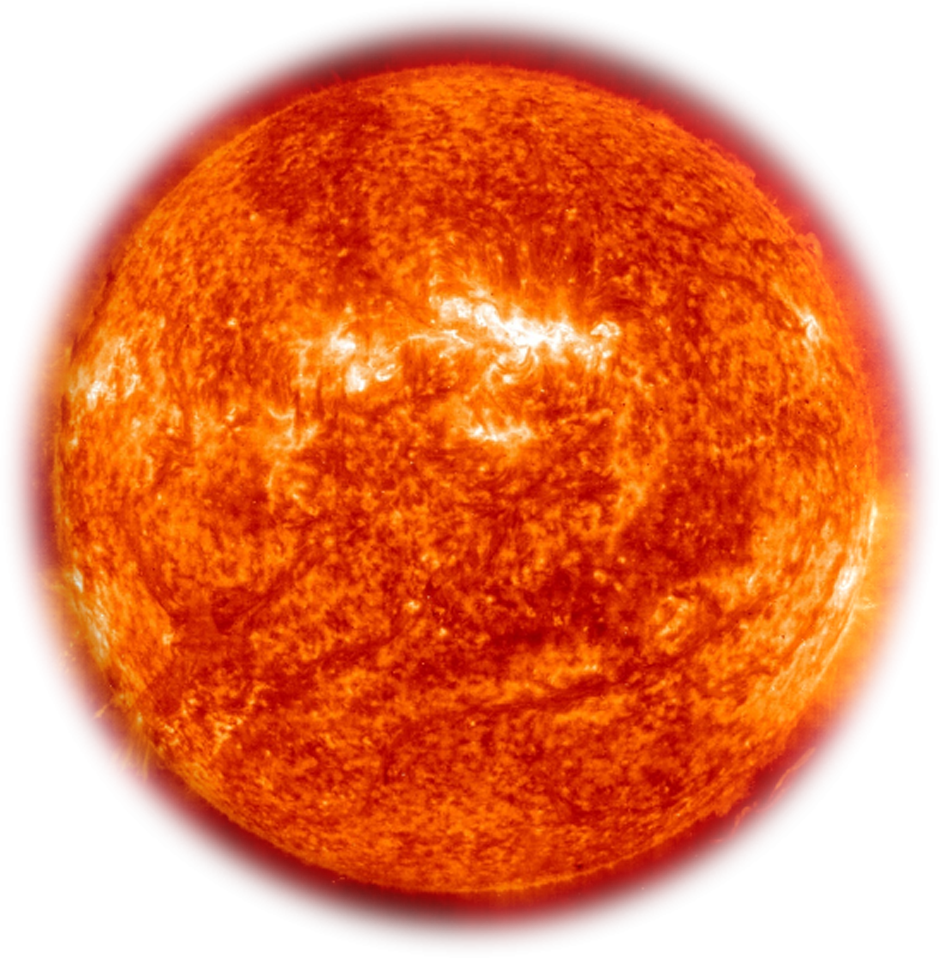
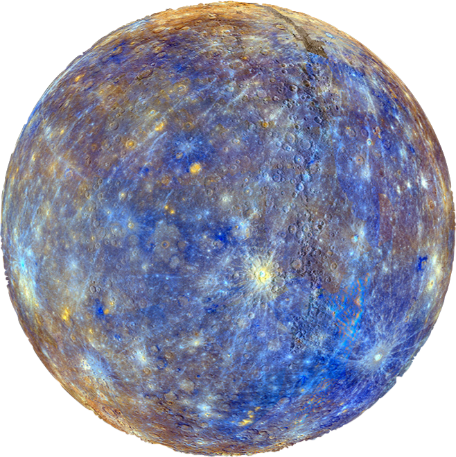
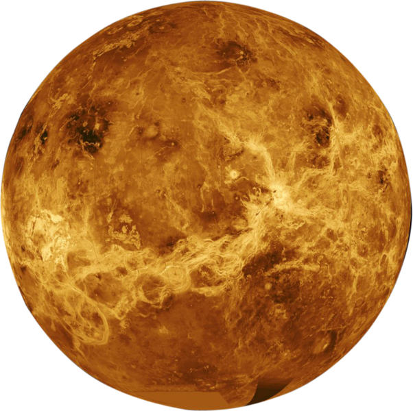
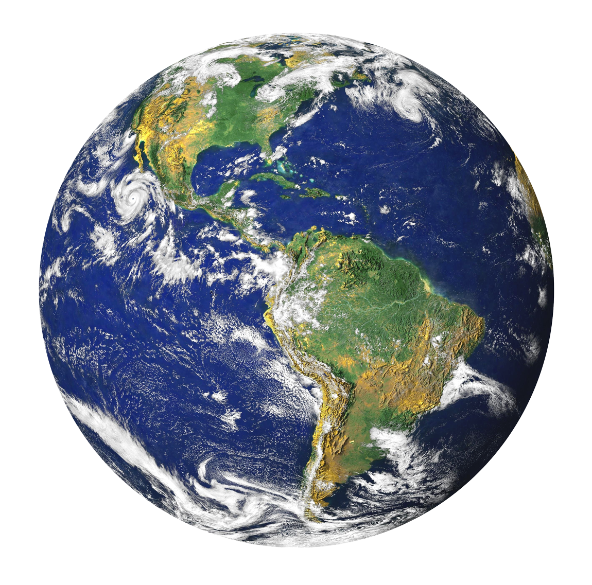
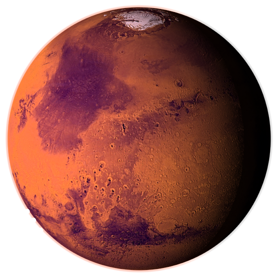
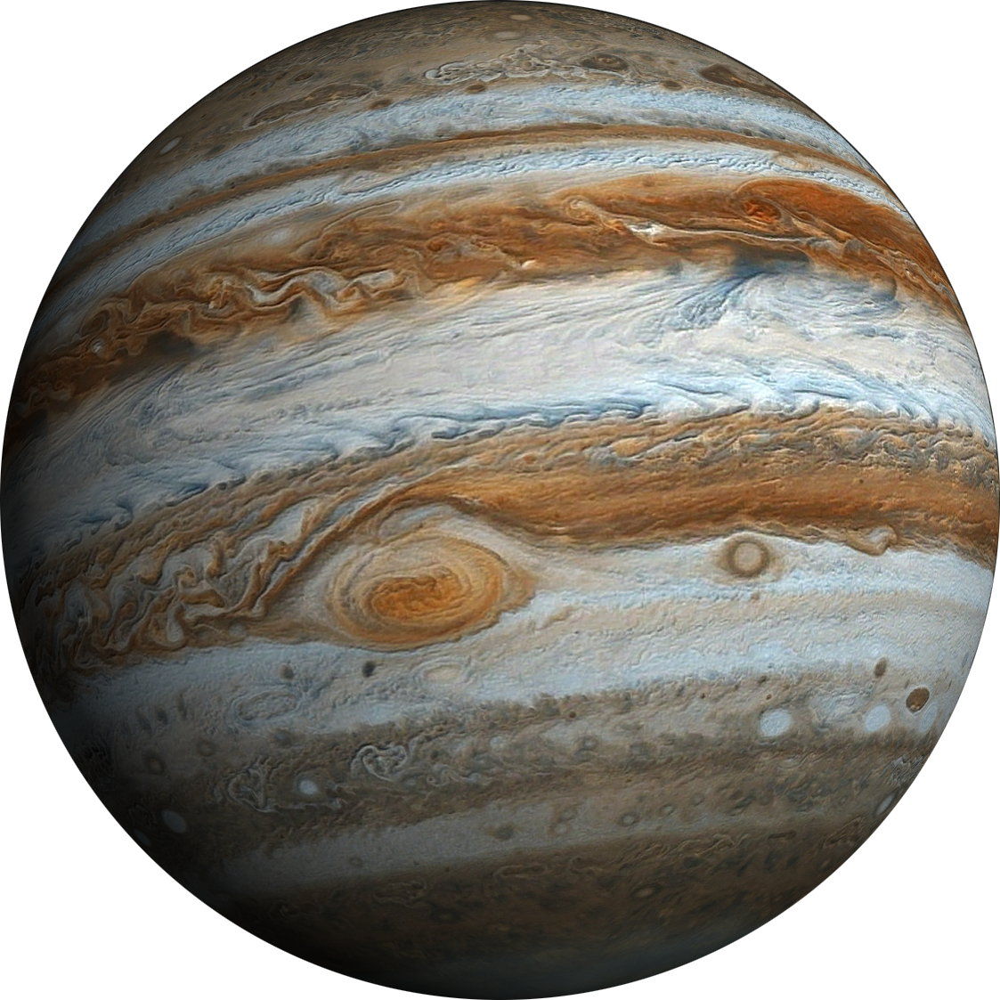
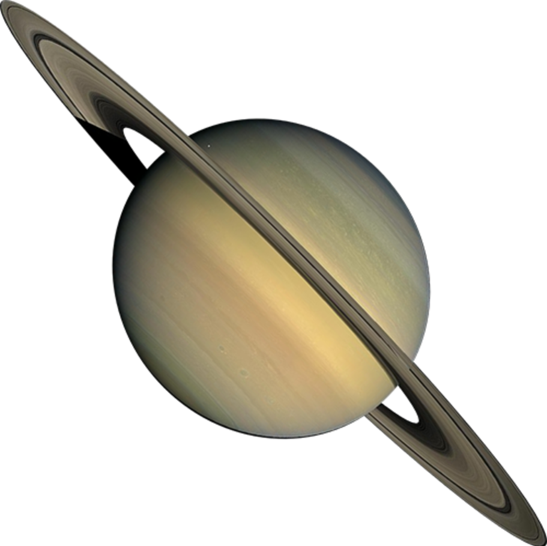
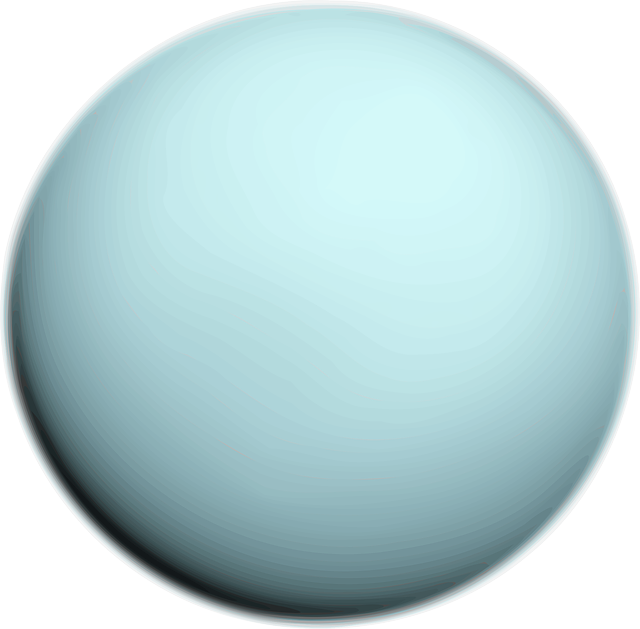
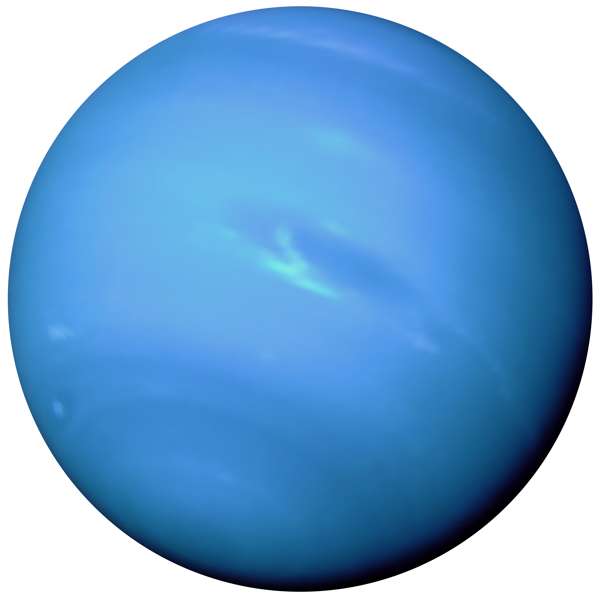

Sol
01

El Sol. es la estrella central del sistema solar.
Su gravedad mantiene a los planetas en órbita y su
energia proporciona luz y calor, haciendo posible la vida
en la Tierra.
Explorar
Mercurio
01

Mercurio es el planeta más cercano al Sol y el más pequeño
del sistema solar. Su superficie rocosa está cubierta de
cráteres y presenta temperaturas extremas.
Explorar
Venus
02

Venus es el segundo planeta del sistema solar y tiene un
tamaño similar al de la Tierra. Su densa atmósfera está
compuesta principalmente de dióxido de carbono, lo que
provoca un intenso efecto invernadero. Es el planeta más
caliente del sistema solar.
Explorar
Tierra
03

La Tierra es el tercer planeta del sistema solar y el único
conocido que alberga vida. Su superficie contiene grandes
océanos de agua líquida y continentes. Su atmósfera proporciona
las condiciones necesarias para mantener una gran diversidad
de seres vivos.
Explorar
Marte
04

Marte es el cuarto planeta del sistema solar y es conocido
como el planeta rojo debido al óxido de hierro presente en
su superficie. Posee volcanes gigantes, profundos cañones
y antiguos indicios de agua líquida. Es uno de los principales
objetivos de la exploración espacial.
Explorar
Júpiter
05

Júpiter es el quinto planeta del sistema solar y el más grande
de todos. Está compuesto principalmente de hidrógeno y helio.
Su atmósfera presenta enormes tormentas, entre ellas la Gran
Mancha Roja, una gigantesca tormenta que ha sido observada
durante siglos.
Explorar
Saturno
06

Saturno es el sexto planeta del sistema solar y es conocido
por su impresionante sistema de anillos, formado principalmente
por partículas de hielo, roca y polvo. Es un gigante gaseoso
compuesto principalmente de hidrógeno y helio. Su densidad
media es inferior a la del agua.
Explorar
Urano
07

Urano es el séptimo planeta del sistema solar y pertenece
al grupo de los gigantes helados. Su atmósfera contiene
principalmente hidrógeno, helio y metano, que le da su
característico color azul verdoso. Su eje de rotación está
extremadamente inclinado, por lo que gira prácticamente
de lado.
Explorar
Neptuno
08

Neptuno es el octavo y más distante planeta del sistema solar.
Es un gigante helado de intenso color azul, cuya atmósfera
contiene principalmente hidrógeno, helio y metano. Presenta
vientos extremadamente rápidos y temperaturas muy bajas.
Fue descubierto en 1846 mediante cálculos matemáticos.
Explorar